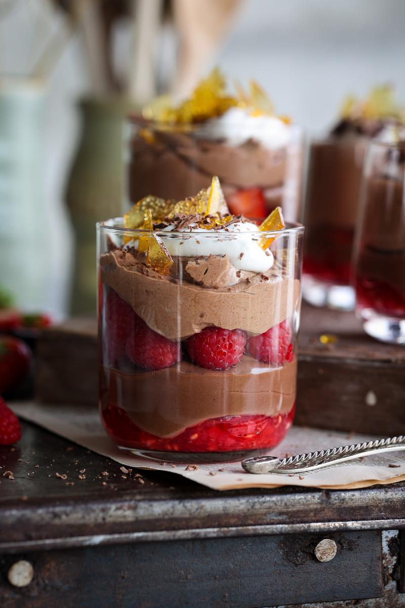
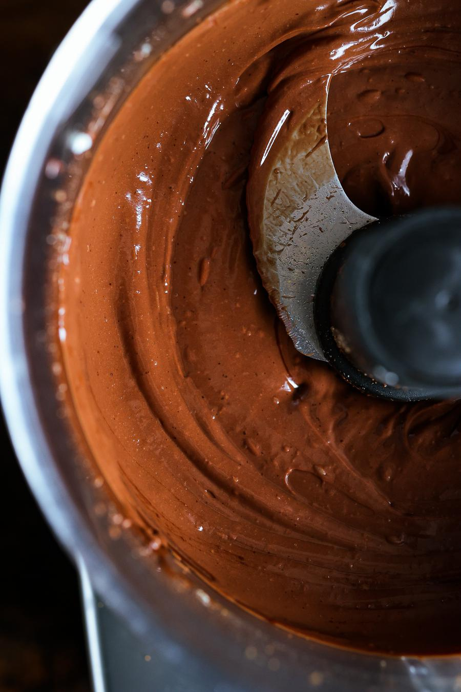
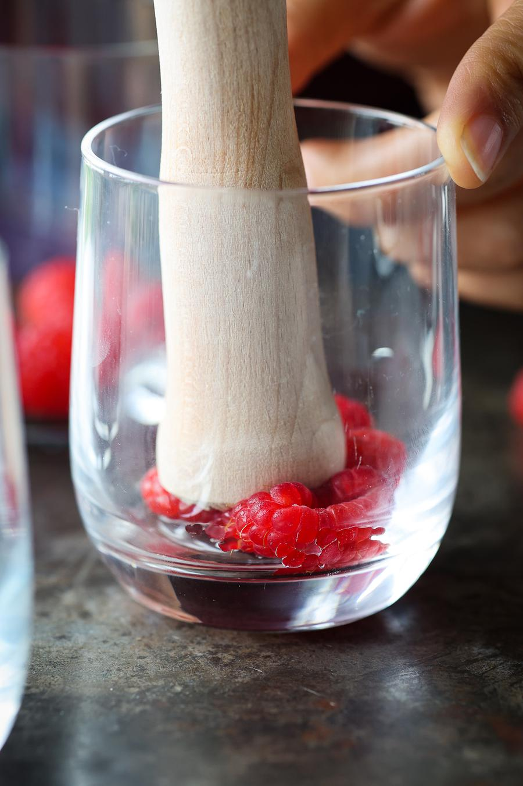
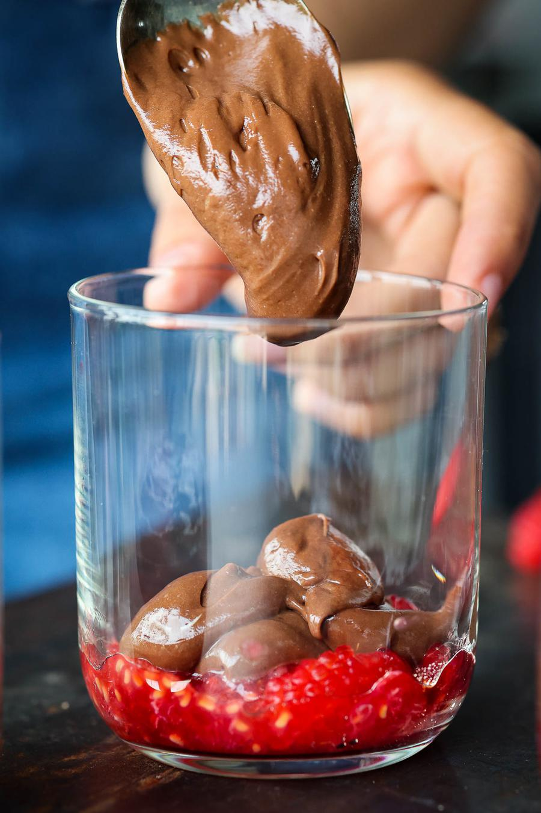
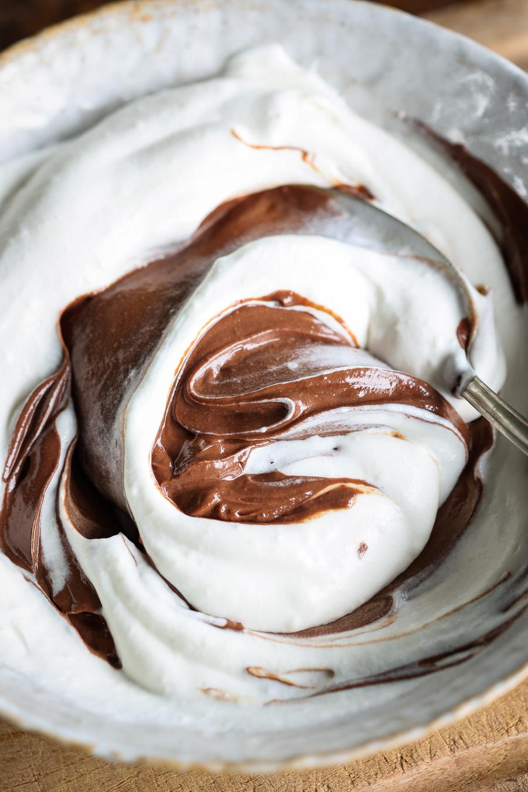
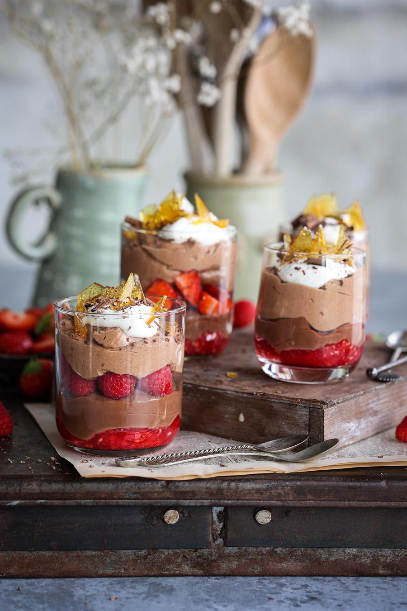

Layered Chocolate Raspberry Mousse

- 🍽️Servings: 6
- 🍝Total time: 20 min
- ⏱️Prep time: 20 min
Ingredients
- 10.5 oz (300 g) silken tofu, drained
- 7 oz (150 mL) melted dairy-free dark chocolate
- ½ tsp pure vanilla extract
- ¼ tsp ground cardamom (optional)
- ¼ cup (56 g) granulated sugar, divided
- 4 cups (492 g) fresh raspberries, divided
- ½ cup (120 mL) vegan whipping cream
- 1 Tbsp (7 g) cream stabilizer
Optional garnish
- caramel shards
- chocolate shavings
Directions
- To a food processor, add the tofu, melted chocolate*, vanilla, cardamom, and half the sugar. Blend until smooth.

- To each of the serving glasses, add ¼ cup of raspberries. Lightly mash the raspberries with the back of a spoon or tamper.

- Reserve about ¼ of the blended chocolate mixture in a bowl. Divide the remaining between your glasses over the mashed raspberries. Place the glasses in the fridge while preparing the next layer.

- To a large bowl, add the whipping cream, cream stabilizer, and remaining sugar. Whip on medium-high with an electric hand mixer for about 7 minutes, or until stiff peaks form. Reserve some of the whipped cream as a topping if desired.
- Then add the reserved blended chocolate mixture to the remaining whipped cream and gently fold together.

- Remove the cups from the fridge and add some raspberries (or other berries) as the next layer.
- Then divide this whipped chocolate mousse between the glasses.
- Top with the reserved whipped cream and any desired garnishes. Enjoy!

Notes
- * Melt the chocolate in a microwave or on the stove, using a double boiler. Let the chocolate cool off a bit.
Storage
- This dessert is best enjoyed the same day it's made.
- Store leftovers in the fridge for up to 1 day.